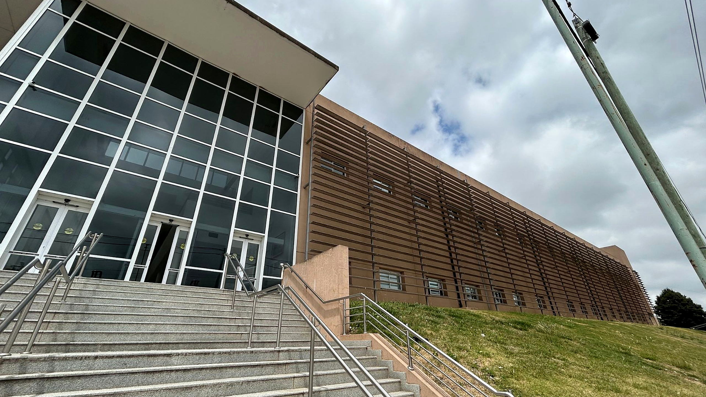
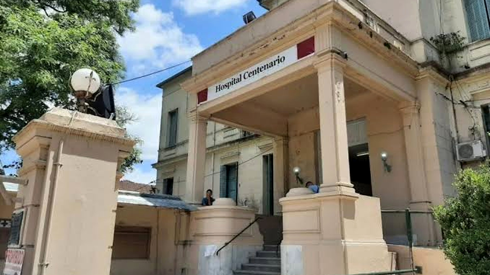
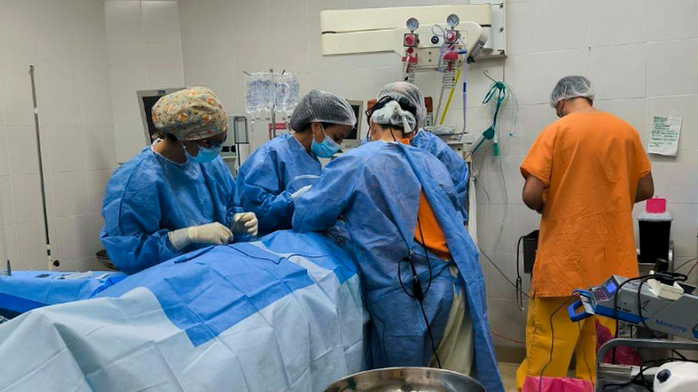
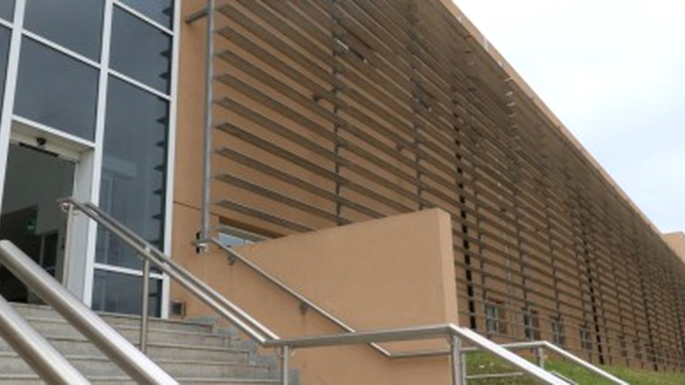
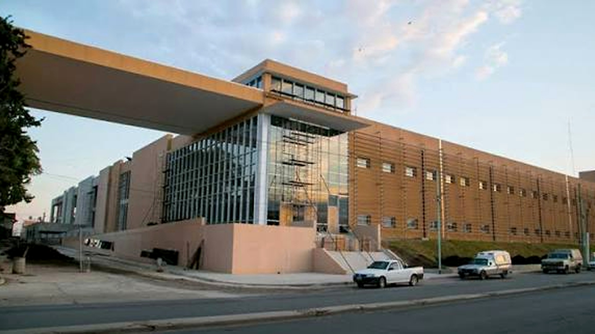

DESTACADA · INSTITUCIONAL 11 de agosto de 2026
El Hospital Centenario avanza en la digitalización de la gestión de su personal
Una nueva etapa de modernización para mejorar la organización interna y acompañar el trabajo de los equipos de salud.
Leer noticia

Comunidad12 de agosto de 2026
Capullos entregó un respirador de alta complejidad al Hospital Centenario
Una contribución que fortalece la capacidad de atención y el cuidado de la comunidad.
Leer más

Salud2 de septiembre de 2026
Cuatro residentes de medicina general se forman en atención primaria
La formación continua de nuevos profesionales es parte del compromiso con la salud pública.
Leer más

Institucional10 de septiembre de 2025
Andrea Martins asumió la dirección del Hospital Centenario
Una nueva etapa de gestión para continuar fortaleciendo la atención hospitalaria.
Leer más

Salud8 de noviembre de 2025
El Hospital destaca el rol de los profesionales de diagnóstico por imágenes
La tecnología y el trabajo especializado son aliados fundamentales para el diagnóstico.
Leer más
No encontramos noticias con esos criterios.